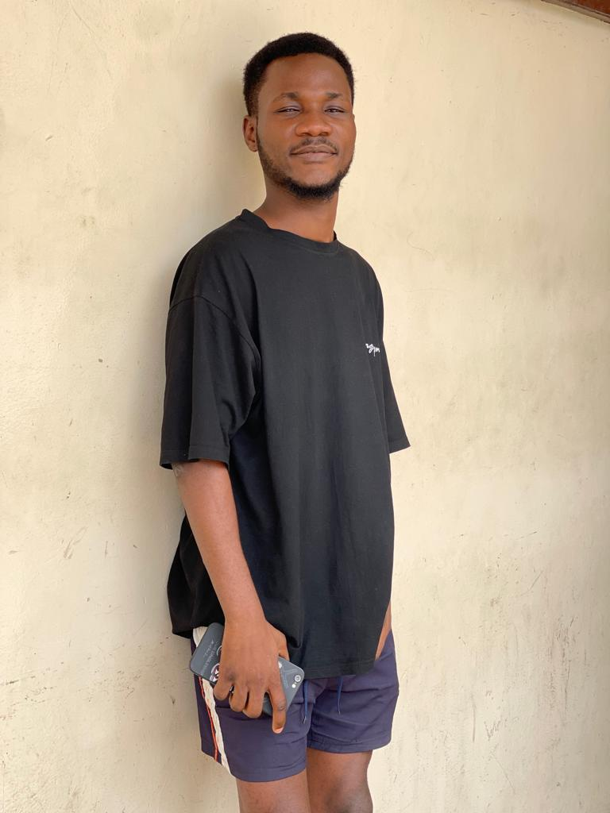

The Rise of Ricch Tech CEO Theophilus: How a Breakthrough in Front End Development Made Him an Overnight Sensation
Introduction:
In the fast-paced world of technology, innovation is the key to success. And for Ricch Tech CEO Theophilus, his latest breakthrough in front end development has catapulted him to the top of the industry's most popular personalities. With his innovative approach and dedication to excellence, Theophilus has become the talk of the town, and his name is on everyone's lips. In this blog, we'll explore the story behind his rise to fame and what makes him the most sought-after expert in front end development.
The Breakthrough:
Theophilus's journey to stardom began with a revolutionary new approach to front end development. By combining cutting-edge technologies with creative problem-solving, he was able to create a game-changing solution that simplified the development process and improved user experience. His innovative approach quickly gained attention from industry leaders and tech enthusiasts alike, who were impressed by the ease and efficiency of his solution. The Rise to Fame:
The Impact:
Theophilus's breakthrough has had a significant impact on the tech industry. His solution has improved the way developers work, making it easier and more efficient to create high-quality user experiences. His influence has also inspired a new generation of developers, who are eager to follow in his footsteps and make their own mark on the industry.
More News
Financial Controller
In the world of morden financial management...Detty December
Ghnana's most popular Celebrity DeBuak just landed at the Kotoka Int. Airport for the...Conclusion:
Ricch Tech CEO Theophilus's rise to fame is a testament to the power of innovation and dedication. His breakthrough in front end development has made him an overnight sensation, and his influence will be felt for years to come. As the tech industry continues to evolve, one thing is certain: Theophilus will be at the forefront, leading the charge and inspiring others to do the same. Follow Theophilus's Journey:
Stay up-to-date with the latest news and updates from Theophilus by following him on social media:Final Game Of 2024
maxime distinctio expedita veniam? erit.